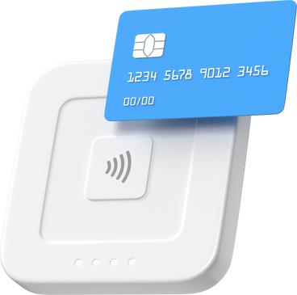

Un service fiable, agrée ANTS et adapté à votre situation, directement à votre domicile, à l'Hôpital, en centre, en clinique ou sur votre lieu de travail.
6 photos d'identités ou E-photos
instantanées, pour tous vos documents officiels.
Service agrée ANTS - Normes ISO/IEC 19794-5
Prise de vue et impression instantanée, pour des photos d'identité à votre domicile ou ailleurs.
Obtenez vos photos d'identités à l'endroit ou vous vous trouvez. Grâce à notre studio de photographie mobile, nous vous remettons instantanément vos photos d'identité, aux normes Normes ISO/IEC 19794-5 - ANTS. La prise de vue et l'impression se font sur place en 15 minutes
maximum.
Vous ne pouvez pas vous déplacer ou vous n'avez pas le temps ? Optez pour des photos d'identité à domicile, sans contraintes.
Vous êtes hospitalisé, en invalidité ? Vous n'avez pas le temps de vous déplacer ?
Vous avez des enfants en bas âge ?
Appelez moi pour obtenir vos photos d'identités, à votre domicile ou ailleurs. La prise de vue et la l'impression des photos d'identité se font sur place, instantanément.
Il vous suffit de m'appeler pour prendre rendez-vous, c'est simple, garantit et rapide.
Personne hospitalisée
Personnes à mobilité réduite
Nourissons, enfants en bas âge
Seniors ou personnes isolées
Profession libérale & professsionnels ne pouvant se déplacer
Comment fonctionne le service de photographie d'identité à domicile ?

👉 Quel est le tarif pour obtenir 6 photos d'identité à domicile ?
Le tarif pour une planche de 6 photos d'identité ou E-photo, est de 49 euros ttc.
- Jusqu'à 15 km : 49 €
- De 15 km à 25 km : 64 €
- Au‑delà de 25 km : 79 €
👉 Combien de temps dure la séance de photographie d'identité à domicile?
La séance dure 15 minutes maximum. Ce temps comprend l'installation du mini-studio, la prise de vue, le traitement de la photo d'identité, l'impression de la photo d'identité, le rangement du mini-studio
👉 Qu'est-ce qui est compris dans le tarif de 49 € ?
Le tarif de 49 euros comprend la prise de vue, le traitement des photos, le matériel de studio, l'impression des photos, l'imprimante et le papier, ainsi que le déplacement.
👉 Le tarif peut-il être dégressif pour faire réaliser des photos d'identité à domicile ?
Le tarif peut être dégressif pour plusieurs personnes lors d'un même rendez-vous.
👉 Peut-on obtenir un devis personnalisé pour des photos d'identités à domicile?
J'ai trouvé le service sur internet. Ma femme a des problèmes pour se déplacer. Merci beaucoup Fabien pour vos photos de qualité.
— Pascal T., Tassin-la-Demi-Lune
⭐⭐⭐⭐
Photographe très pro. Il a su s'attirer la confiance de ma fille de 18 mois pour des photos d'identité parfaites.
— Mélanie F., Francheville
⭐⭐⭐⭐
Mille Merci Fabien pour votre venue à l'hôpital Saint Luc.Sans votre intervention, le titre de séjour de mon père n'aurait pu se reconduire
— Zakary M., Lyon 2
Questions fréquentes sur les photos d'identité à domicile
Combien coûte une photo d'identité à domicile à Lyon et Lyon-Ouest ?
Le tarif est de 49€ pour une planche de 6 photos ou 4 e-photo numérisée ANTS. Déplacement sur Lyon et l'Ouest Lyonnais (Lyon, Tassin, Écully, Francheville, Craponne, Chazelle, etc.).
- Jusqu'à 15 km : 49 €
- De 15 km à 25 km : 64 €
- Au‑delà de 25 km : 79 €
Comment faire des photos d'identité à domicile à Lyon ?
Vous pouvez essayer de les faire vous même, pour votre passeport et votre carte d'identité. Pour le permis de conduire et le titre de séjour il vous faut une photographie numérique (e-photo) aux normes ISO/IEC 19794-5. Si vous ne voulez pas ou ne pouvez-pas vous déplacer,
appelez-moi pour convenir d'un rendez-vous. Nous nous rendons à votre domicile, sur votre lieu de travail, à l'hôpital, en centre (...). La séance dure 20 minutes maximum et vos 6 photos vous sont remises instantanément pour 49 euros seulement.
Une séance de photo d'identité à domicile dure combien de temps?
Une séance dure au maximum 25 minutes. La prise de vue dure 5 minutes - Le post-traitement de la photo, sa signature et son impression dure 15 minutes - le rangement dure 5 min.
Est-ce que le photographe à domicile est agréé ANTS ?
Oui, le photographe est agréé ANTS (Agence Nationale des Titres Sécurisés). Cela garantit que vos photos sont 100% conformes aux normes biométriques et seront acceptées par toutes les préfectures pour passeport, carte d'identité, permis de conduire, etc.
Quel est le délai pour obtenir vos photos d'identité ?
J'interviens sous 24h sur Lyon et Lyon Ouest. Pour les demandes très urgentes, je propose un service express sous 1h (supplément de 40€). Prise de vue et remise des photos instantanément et l'e-photo est envoyée sur votre boîte mail aussitôt.
Peut-on vraiment faire ses photos d'identité à domicile ?
Oui, c'est 100% légal et conforme. J'utilise un matériel professionnel agréé ANTS avec fond homologué et éclairage calibré. Le service de photos d'identité à domicile vous fait gagner du temps et évite les déplacements et c'est particulièrement pratique pour les personnes à mobilité réduite,
les familles ou les professionnels. Pour les e-photos des titres de séjour et permis de conduire, vous ne vous déplacez plus, toutes les démarches se font ensuite en ligne.
Fabien Marceau, un photographe d'expérience à votre service
Expérimenté - Agrée ANTS - Professionnel
Je suis Fabien Marceau, photographe professionnel (publicité, mode, presse, etc) spécialisé aujourd'hui dans la photographie d'identité à domicile sur Lyon et Lyon Ouest. Avec plus de 20 ans d'expérience, je m'engage à fournir un service rapide, efficace et de haute qualité pour tous vos documents officiels (Passeport biométrique, carte d'identité, titre de séjour, permis de conduire, portrait professionnel).